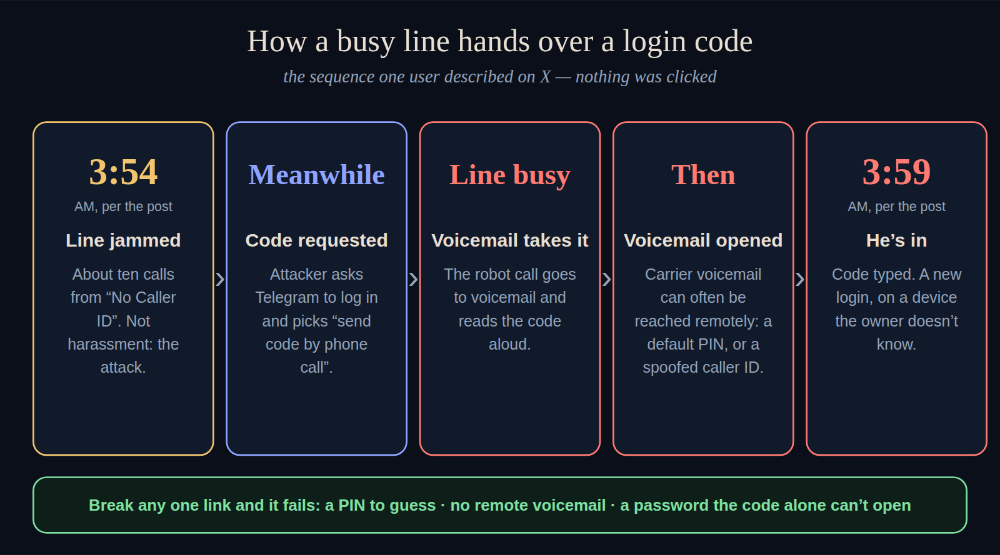
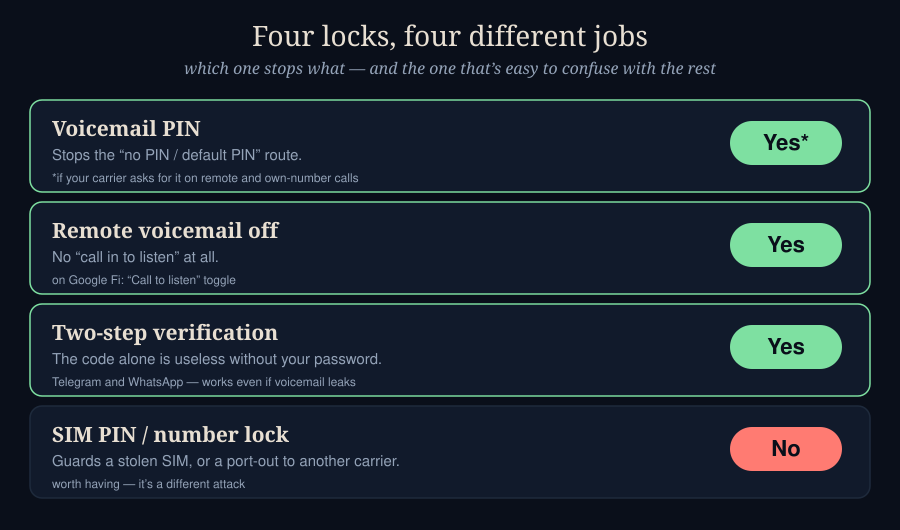
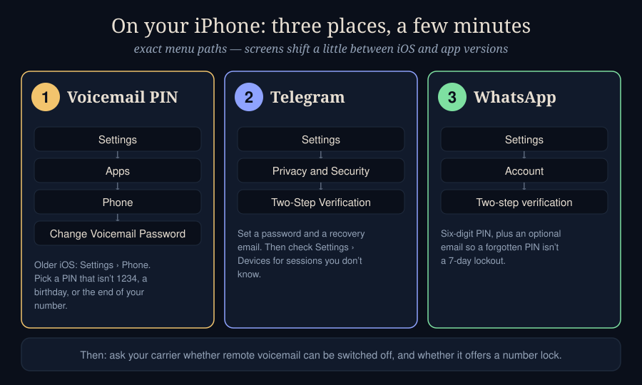

Your Voicemail Can Hand Over Your Telegram Login Code — How to Lock It Down on iPhone
SCIENCE & TECHNOLOGY · OCTOBER 5, 2026

On October 5, 2026, a crypto developer posted on X that someone had logged in to their Telegram account without a single click on their side. The attacker never touched the phone. They used its voicemail — the one place a login code can end up that nobody thinks of as a door. If you have an iPhone, a voicemail box and a messaging app that can send codes by phone call, it is worth ten minutes to see whether yours is open.
How a voicemail can leak a Telegram login code
The account is the author's own and I have not been able to verify it independently, but the mechanism is ordinary telephony, and each step is a documented feature. As the post tells it:
- The line was jammed. At 3:54 AM the phone rang about ten times in a row from "No Caller ID". That was not harassment; it was the first move.
- A code was requested. Meanwhile the attacker told Telegram to log in with the victim's number and chose send the code by phone call.
- The robot reached voicemail. The line was busy, so Telegram's automated call went to voicemail and read the code aloud to the answering machine.
- The voicemail was opened remotely. The post says carrier voicemail can often be reached from outside with a default PIN or a spoofed caller ID, and that the attacker listened to the message.
- At 3:59 he was in. The calls had woken the author, who saw a Telegram notification about a new device and ended the session within minutes. In that time the attacker had tried a few wallet bots and set a two-step password of his own on the account.
Nothing here is an iPhone flaw. It would work the same on any phone, because the weak link sits in the carrier's voicemail system and in the "call me with the code" fallback that many apps offer. The calls at 3:54 AM were noisy; an attack run while you sleep with the phone silenced is the one that worries me. (The most dangerous thing in this story is a robot reading six digits to an answering machine, and I do not enjoy having typed that sentence.)

What to check on your iPhone, step by step
These are the settings the post recommends, with the menu paths as the apps and Google Fi's help pages give them. Screens move around between iOS and app versions, so if a name is slightly different on yours, look for the closest match.
- Set a voicemail PIN you chose yourself. Open Settings → Apps → Phone → Change Voicemail Password (on older iOS: Settings → Phone). Avoid 1234, a birthday, repeats, and the last digits of your number — Google Fi, for one, rejects those outright. Save the PIN in the Passwords app so you don't lose it. Whether the option appears and how it behaves can depend on your carrier.
- Turn on two-step verification in Telegram. Open Settings → Privacy and Security → Two-Step Verification, set a password, and add a recovery email. Telegram's FAQ says that once this is on you need both a code and the password to log in, so a code read to voicemail is no longer enough on its own. Then open Settings → Devices and end any session you don't recognise.
- Do the same in WhatsApp. Open Settings → Account → Two-step verification, choose a six-digit PIN, and add an email so a forgotten PIN doesn't strand you.
- Ask your carrier about remote voicemail. Find out whether calling in from another phone — or from your own number — can be switched off or forced to ask for the PIN. Some carriers let you do this in an app, some only by phone.
- Ask about a number lock. It does not stop this attack, but it stops a different one: someone talking your carrier into moving your number to their SIM.

What this looks like on Google Fi
Fi is a useful example because its controls are easy to find. Its help pages say that listening to voicemail from another phone only works if "Call to listen" is switched on, and that a PIN is then required; that toggle lives under Phone settings → Voicemail in the Fi app or on the Fi website. For an iPhone line, Fi's page puts the voicemail PIN itself in iOS Settings, as in step 1 above. Fi also has a Number Lock (fi.google.com/account → Phone settings → Privacy & security → Number lock) that blocks moving your number to another device or carrier while it is on — and that you must switch off first when you change phones or carriers.
The "##002#" tip. The post suggests dialing ##002#, which cancels call forwarding on most GSM-style carriers, as one way to switch voicemail off. Voicemail often rides on forwarding, but carriers differ, and I haven't tested it on any of them. If you rely on voicemail, switching it off may not be what you want; a PIN plus two-step verification closes the same hole without losing the feature.
The signal worth remembering
A burst of calls from a masked number in the small hours is, per the post, a signal rather than a nuisance. The useful response is not to answer; it is to check your messaging apps for a login you didn't make, and end any session you don't recognise. The author was lucky that the calls were loud enough to wake them, and the post's own advice is the part that works whether or not you wake up: nothing sensitive — seeds, keys, passwords — kept in Telegram's Saved Messages, and a second factor on the account that a stolen code cannot open.
Where I could be wrong
This rests on one person's account on X, which I could read but not verify; I have no way to check the timeline or the claim that the voicemail box was reached remotely. I also can't tell you which carriers still let a call from your own number skip the PIN — that varies, which is why the voicemail PIN is marked "if your carrier asks for it" in the table above. Menu names change between iOS and app updates. And two-step verification cuts both ways: if you set a Telegram password with no recovery email and forget it, you may not get back in, and WhatsApp can lock you out of re-registering your number for seven days without your PIN. Nothing here is advice for your particular phone or accounts; it is a map of where the doors are.
Sources
- @shaban_shaame. Post on X describing a voicemail-assisted Telegram account takeover. October 5, 2026. https://x.com/shaban_shaame/status/2107040192653557814
- Google Fi Help. Set up your voicemail (iPhone & iPad). support.google.com/fi/answer/6192734
- Google Fi Help. Check your voicemail ("Call to listen" and the PIN). support.google.com/fi/answer/6209071
- 9to5Google. Google Fi Number Lock. July 9, 2024. 9to5google.com/2024/07/09/google-fi-number-lock/
- Telegram. FAQ: 2-Step Verification. telegram.org/faq
- Malwarebytes. How to set up two-step verification on your WhatsApp account. September 2025. malwarebytes.com